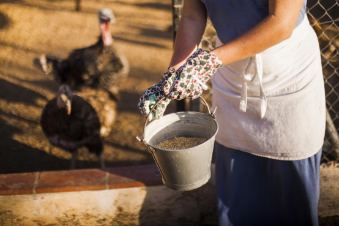

Industry Information
Home > News > Industry Information > The Difference Between Feed Additives and Feed Supplements: A Comprehensive Overview
Oct. 15, 2024
Animal nutrition plays a critical role in ensuring the health, growth, and productivity of livestock. In modern agriculture, animal feed is often enhanced with various substances to ensure nutritional adequacy and optimal performance. Two essential components in this regard are feed additives and feed supplements. While both play crucial roles, they serve distinct purposes. Understanding these differences is essential for farmers, feed manufacturers, and animal nutritionists who aim to optimize feed efficiency and livestock health.

Feed additives are non-nutritional substances added to animal feed to improve feed quality, ensure animal health, or enhance production performance. These additives don't directly provide essential nutrients but are critical in addressing specific challenges such as disease prevention, digestion, and growth rate optimization.
Key Functions:
Digestibility Enhancement: Enzymes such as phytase break down anti-nutritional compounds like phytates, improving phosphorus absorption.
Immune Support: Probiotics, prebiotics, and organic acids help modulate gut flora, enhancing immunity and preventing intestinal disorders.
Growth Promotion: Antibiotics and synthetic compounds (such as ionophores) can promote growth and improve feed conversion ratios.
Example: Probiotics like Bacillus subtilis have gained popularity as a natural alternative to antibiotics, promoting healthy gut microbiota and improving overall feed utilization. According to recent studies, probiotics can increase daily weight gain by up to 8% in broilers under certain conditions.
Types of Feed Additives:
Antioxidants (tocopherols) prevent feed spoilage.
Binders (bentonite) protect against mycotoxins.
Growth Promoters (monensin) improve efficiency by reducing methane emissions in ruminants.
Chemical Mechanism: For example, phytase, a widely used enzyme additive, catalyzes the hydrolysis of phytic acid, releasing bound phosphorus, which otherwise would remain unavailable to non-ruminant animals. This enhances the bioavailability of phosphorus and reduces environmental phosphorus excretion, contributing to more sustainable farming.
On the other hand, feed supplements provide essential nutrients that may be lacking in the animals’ base diet. These supplements are critical to achieving proper animal growth, reproduction, and productivity, especially when primary feeds (like forages or grains) do not provide all necessary nutrients.
Key Functions:
Nutrient Supply: Supplements provide essential nutrients such as proteins, vitamins, and minerals that are critical for animal health and development.
Life Stage Support: Specific life stages, such as pregnancy or lactation, often require additional nutrients, which supplements can provide.
Deficiency Correction: Supplements address dietary deficiencies, ensuring the animal receives adequate amounts of nutrients like calcium, phosphorus, or trace minerals.
Example: Protein Supplements like soybean meal are often used to increase the protein content of diets, especially for animals consuming low-protein forages. For dairy cows, balancing the protein intake with high-quality supplements is essential for maximizing milk production.
Types of Feed Supplements:
Protein supplements (soybean meal, fishmeal).
Energy supplements (fats, molasses).
Vitamin and mineral premixes (calcium carbonate, vitamin A).
Scientific Rationale: For example, calcium carbonate is often supplemented in poultry diets to support eggshell formation and bone health. Without adequate calcium supplementation, chickens may suffer from poor eggshell quality and weakened skeletal structure.
While both feed additives and supplements play vital roles, their functions and composition differ fundamentally:
Feed Additives are typically non-nutritional substances that enhance feed quality or animal performance by improving digestibility, supporting immune function, or promoting growth. They often work at the biochemical or microbial level within the animal.
Feed Supplements, in contrast, are used to supply nutrients missing in the basic diet, ensuring that animals receive balanced nutrition for optimal health and production. They contribute directly to fulfilling dietary needs such as protein, energy, or vitamins.
Feed Additives: The use of feed additives is highly regulated, especially concerning synthetic compounds like antibiotics. Regulatory bodies such as the FDA (U.S. Food and Drug Administration) and EFSA (European Food Safety Authority) have implemented strict guidelines to ensure the safe and responsible use of additives in animal feed, particularly to limit the risk of antibiotic resistance and chemical residues in meat and dairy products.
Feed Supplements: Feed supplements, being primarily nutritional, are subject to less stringent regulation compared to additives. However, they must still meet safety and efficacy standards to ensure the health of the animals and the quality of animal-derived food products.
For farmers, understanding the difference between feed additives and supplements is crucial for making cost-effective decisions. Using the right combination can improve overall productivity:
Additives: Farmers may use additives like probiotics and enzymes to improve nutrient absorption and reduce disease outbreaks, resulting in better feed conversion and reduced costs.
Supplements: Providing vitamin and mineral supplements ensures livestock meet their dietary needs, leading to healthier animals and increased yields, particularly in systems where forage or base diets may be deficient.
With a growing focus on sustainability and natural products, the future of feed additives lies in the development of bio-based and eco-friendly solutions. Natural growth promoters like essential oils and organic acids are gaining popularity as alternatives to synthetic chemicals. At the same time, novel protein sources such as insect meal and algae are being explored as sustainable options for feed supplements.
GOLIATH Chemical Trade Company is a leading supplier of high-quality feed additives, serving the global market with innovative, science-based solutions. GOLIATH is dedicated to providing products that align with modern farming needs, focusing on safety, sustainability, and animal health. By staying ahead of industry trends and regulatory changes, GOLIATH ensures that its products meet the highest standards of quality and effectiveness, making it a trusted partner in the agricultural industry.If you have any questions about feed additives and supplements, please click here to contact us

Tianjin Chengyi International Trading Co., Ltd.
8th floor 5th Building of North America N1 Cultural and Creative Area，No. 95 South Sports Road, Xiaodian District, Taiyuan, Shanxi, China.
+86 351 828 1248 /
Navigation